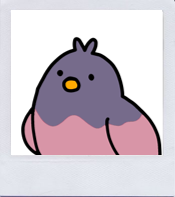
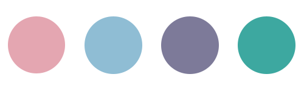

부드러운
저명도 여름뮤트
#낮은 채도
#이광수
#매트한 립

자세한 결과
저명도 여름 뮤트 톤은 세 가지 타입 중에서 대비에
가장 약한 타입
이에요.
쿨한 느낌이지만 대비가 강하지 않고 그레이가 섞인 부드러운 이미지를 연출해요. 핑크베이스의 파운데이션이나 펄감이 없는 아이섀도우가 잘 어울려요.
또한 MLBB와 같은 말린 장미와 팥죽 색같은 매트한 립을 바르는 게 좋아요.
나와 어울리는 컬러는?

대표적인 연예인
이광수 육성재 윤두준